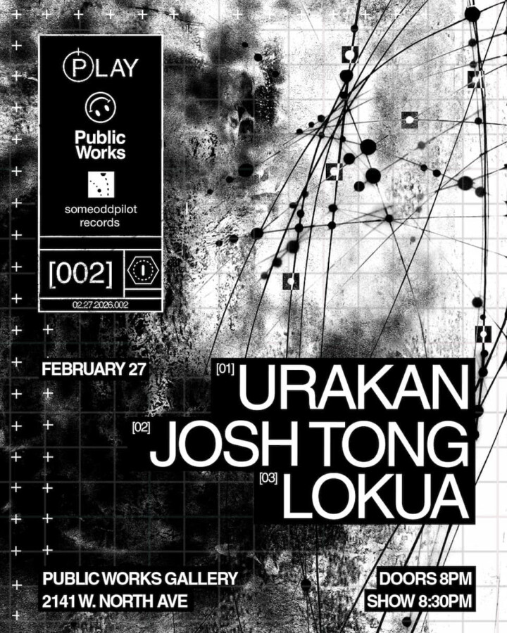

PLAY [002]
Join us for our second installment — a night of live electronics, experimental techno, ambient sounds, with artists making waves in Chicago’s underground.
Featuring
Urakan @urakan2001
Josh Tong @josh_tong_
Lokua @lokua
Fri. Feb 27th
Doors at 8PM, Show at 830PM
18+ event $15 suggested donation